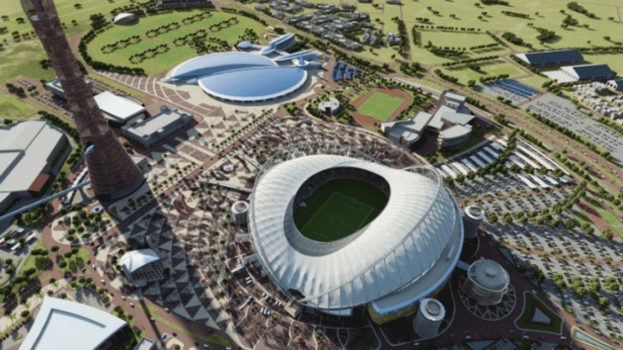

<body bgcolor="#f1f1f1">
    <div id="left-bar">
        
        <p>
            The match schedule was confirmed by FIFA in July 2020. The group stage was set to begin on 21 November, with four matches every day. Later, the schedule was tweaked by moving the Qatar vs Ecuador game to 20 November, after Qatar lobbied FIFA to allow their team to open the tournament. The final was played on 18 December 2022, National Day, at Lusail Stadium.

The matches for each group were allocated to the following stadiums:

Groups A, B, E, F: Al Bayt Stadium, Khalifa International Stadium, Al Thumama Stadium, Ahmad bin Ali Stadium
Groups C, D, G, H: Lusail Stadium, Stadium 974, Education City Stadium, Al Janoub Stadium
FIFA confirmed the group stage venue and kick-off times on 1 April 2022, following the draw. On 11 August, it was confirmed that Qatar vs Ecuador had been brought forward one day, now becoming the tournament's opening match, while Senegal vs Netherlands, which would have opened the tournament under the original schedule, had been reallocated to the freed-up timeslot.
    </p>
</div>
</body>
